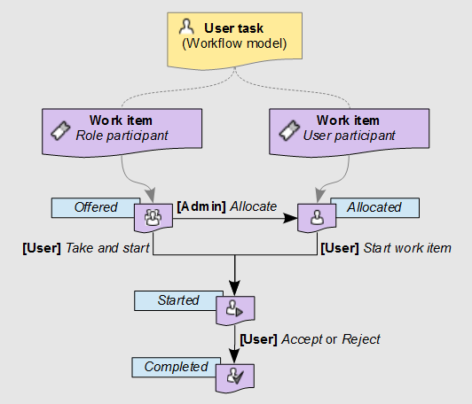

Work items
Section contents
About work items
A work item is a unit of work that must be performed by a human user as a part of a user task. By default, when a workflow model defines a user task, data workflows that are launched from that workflow model's publications will generate an individual work item for each of the participants listed in the user task.
Work item states
When the data workflow spawns a work item for a modelled user task during execution, the work item passes through several possible states: offered, allocated, started, and completed.
By default, for each individual user listed as a participant of the user task, the data workflow creates a work item in the allocated state. The defined user can directly begin working on the allocated work item by performing the action 'Start work item', at which time it moves to the started state.
By default, for each role included as a participant of the user task in the workflow model, the data workflow creates one work item in the offered state. Any user who is a member of that role can claim the work item using the action 'Take and start', thereby moving the work item to the started state.
Before a user has claimed the offered work item, a manager of the data workflow can intervene to manually assign the work item to a single user, thus moving the work item to the allocated state. Then, when that user begins work on the work item by performing the action 'Start work item', the work item progresses to the started state.
Note
The default behavior described above can be overridden by a programmatic extension defined in the user task. In this case, work items may be generated programmatically and not necessarily based on the user task's list of participants.
Finally, after the user who started the work item has finished the assigned action, the concluding accept or reject action moves the work item to the completed state. Once a user completes a work item, the data workflow automatically progresses onto the next step defined in the workflow model.
Diagram of work item states

Working on work items as a participant
All work items relevant to you as a user (either offered or allocated to you), appear in your work items inbox. When you begin working on a work item, you can add an associated comment that will be visible to other participants of the data workflow, as well as administrators and monitors of the workflow. As long as you are still working on the work item, you can go back and edit this comment.
After you have performed all the necessary actions assigned for the work item, you must signal its completion by clicking either the Accept or Reject button. The labels of these two buttons may differ depending on the context of the work item.
To review the current progress of a data workflow for which you have a waiting work item in your work item inbox, click its 'Preview'  button in the 'Data workflow' column of the table. A pop-up will show an interactive graphical view of the data workflow up until this point and the upcoming steps. You can view the details of a step by clicking on that step.
button in the 'Data workflow' column of the table. A pop-up will show an interactive graphical view of the data workflow up until this point and the upcoming steps. You can view the details of a step by clicking on that step.
Note
If you interrupt the current session in the middle of a started work item, for example by closing the browser or by logging out, the current work item state is preserved. When you return to the work item, it continues from the point where you left off.
Work item priorities
Work items may carry a priority value, which can be useful for sorting and filtering outstanding work items. The priority of a work item is set at the level of its data workflow, rather than being specific to the individual work item itself. Thus, if a data workflow is considered urgent, all its associated open work items are also considered to be urgent. By default, there are six priority levels ranging from 'Very low' to 'Urgent', however the visual representation and naming of the available priority levels depend on the configuration of your EBX5 repository.
See alsouser task (glossary)
Related conceptsUser tasks
 User guide table of contents
User guide table of contents